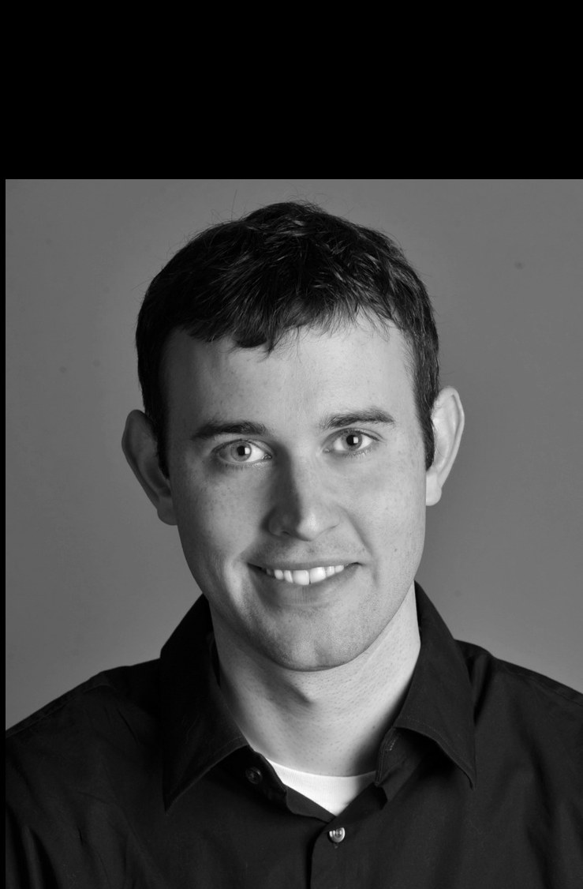
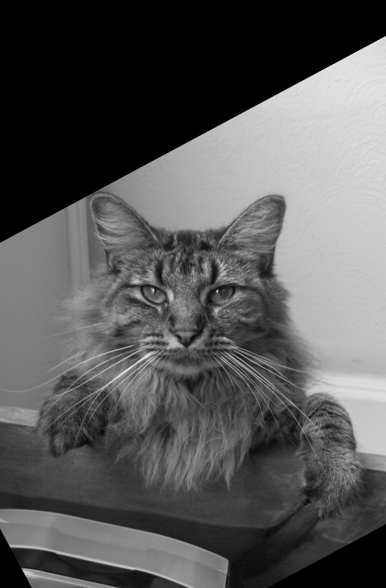
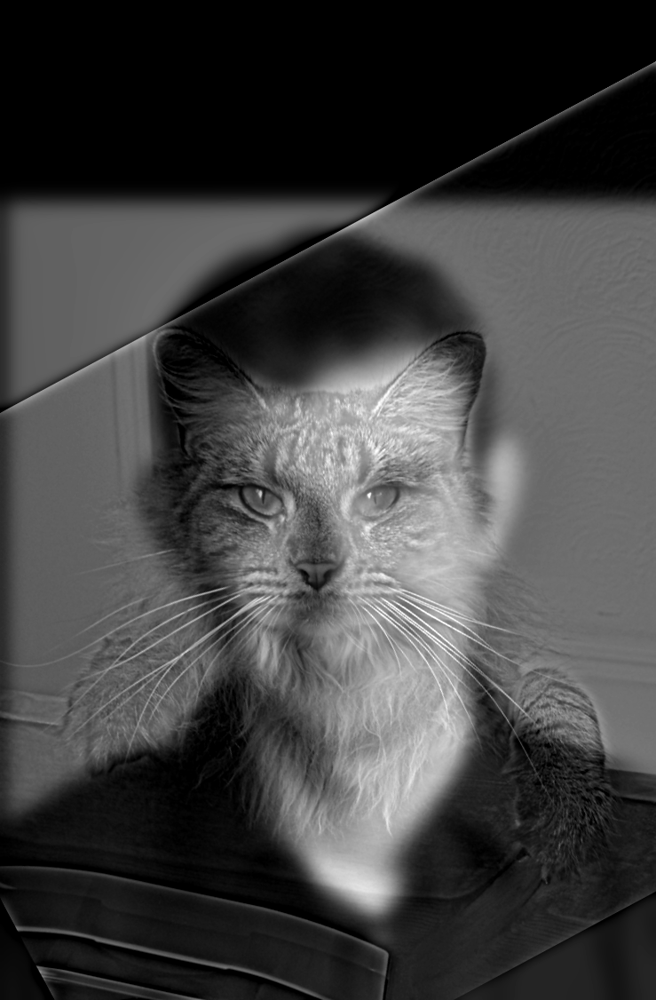
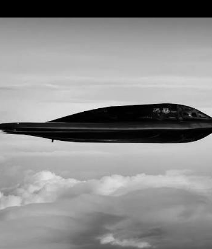
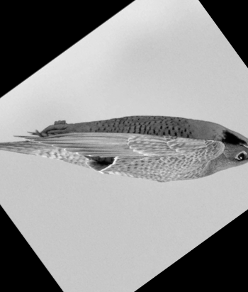
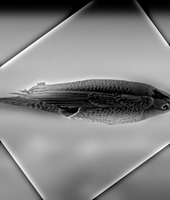
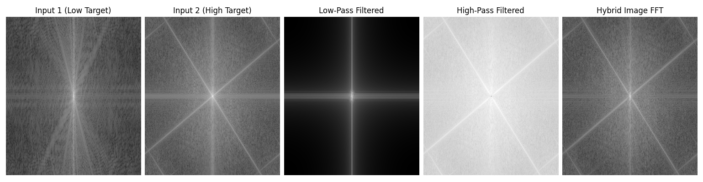

Part 1: Fun with Filters
Part 1.1: Convulations from Scratch
The basic process for the convulations are simple. First, we flip the kernel to avoid being cross-correlation. Next, the images are zero-padded to ensure the image size is not changed by the convultion. Finally, the convultion is applied to every pixel on the image.The first version for convolutions used 4 for loops, two dedicated to scanning across the (padded) image, and another two for scanning across the convulation kernel. This function took 32.0s to run.
def convolve_4loops(img, kernel):
kernel = kernel[::-1, ::-1]
h, w = kernel.shape
pad_h = (h - 1) // 2
pad_w = (w - 1) // 2
padded = np.pad(img, ((pad_h, pad_h), (pad_w, pad_w)), mode='constant', constant_values=0)
img_h, img_w = img.shape
output = np.zeros((img_h, img_w))
for x in range (img_w):
for y in range(img_h):
value = 0.0
for u in range(h):
for v in range(w):
value += padded[y+u, x+v] * kernel[u, v]
output[y, x] = value
return output

Original Image

Blurred (Box Filter)
We can design the kernel to extract different details from the image. One such example is shown below, where the \( D_x \) and \( D_y \) kernels are used to find vertical and horizontal edges respectively. (\(D_x\)) finds brightness changes moving from left to right, and (\(D_y\)) finds brightness moving top to bottom.

Vertical Edge Detector (\(D_x\))

Horizontal Edge Detector (\(D_y\))
Part 1.2: Finite Difference Operator
Using the (\(D_x\)) and (\(D_y\)) kernels, we extract the strength of edges in the vertical and horizotal direction. We can combine this information to obtain a gradient, which marks all edges based on their strength, allowing us to observe edges from all directions. \[ \nabla = \sqrt{ \left( \frac{\partial I}{\partial x} \right) ^2 + \left( \frac{\partial I}{\partial y} \right) ^2 } \]
Original Image

Gradient Magnitude
With the gradient magnitude, we can set a minimum threshold for the strength of an edge. Any edge with a magnitude less than the threshold will collapse to black, and edges with a greater magnitude will become white. The results of different thresholds are shown belows. The threshold of 0.3 was chosen as it reduced most of the noise from the grass while still keeping full, thick edges on other objects

Threshold = 0.1

Threshold = 0.15

Threshold = 0.2

Threshold = 0.25

Threshold = 0.3 (Chosen)
Part 1.3: Derivative of Gaussian (DoG) Filter
TODOPart 2: Fun with Frequencies!
Part 2.1: Image "Sharpening"
Gaussian blurs are essentially low-pass filters when used on images. Subtracting these low frequencies from the image gives us an image containing only the high frequency features. Sharpening images addes the high frequency features on top of the existing image to make these features more pronounced. We can change \( \alpha \) to adjust how much sharpening is added based on the image below. \[ I_sharpened = I + \alpha(I - I * G) \ = I * ((1+ \alpha)e - \alpha G) \]Using the example picture of the Taj Mahal, we can see the blurred (Low-Pass Filter) image and the High Frequency features below.

Original

Blurred

High Frequency

Alpha = 1

Alpha = 2

Alpha = 3

Alpha = 5

Alpha = 10
I also applied this to a photo I took from outside Foothill to see how this affects objects in darker scenes as well. The noise in the sky seems to be more pronounced in these images as compared to the Taj Mahals. Note that the same kernel was used for all of these images

Original

Blurred

High Frequency

Alpha = 1

Alpha = 2

Alpha = 3

Alpha = 5

Alpha = 10
Using the same image, I applied the sharpening to the blurry image itself. Looking at the sharpened images, the detail lost in the blur, such as in the campinille were lost and unrecoverable. However, this did restore the edges to the image, making the objects and skyline more defined compared to the sky.
Original

Blurred

Alpha = 1

Alpha = 2

Alpha = 3

Alpha = 5

Alpha = 10
Part 2.2: Hybrid Images
To create a hybrid image, the first step is to align the images together. Using the provided code, the images were resized, rotated, and aligned based on common features. Next, one image was processed with a Gaussian Blur, which acts as a low-pass filter, and the other image had it's blurred copy subtracted, preserving only the high frequencies. When these images are stacked, we get our hybrid image. When viewed up close, the high-frequencies dominate, 'revealing' the second image. When you view the image from far away, the low frequencies dominate. The image can be altered using two sigma values, which each correspond to one of the images. Manipulating these values changes how blended the images areMy first attempt focused on recreating the hybrid image between Derek and Nutmeg to get some intuition for how the different sigma values affect the final image. Using the eyes as alignment features, the following images were generated.

Derek (aligned)

Nutmeg (Aligned)

Blended Result
I moved on to creating a custom blend between two images. I chose the Peregrine falcon and the B2 bomber. I always found it interesting how advanced technology ends up recreating features found in nature (like the similarities between basis filters and our eyes), and I thought that blending the two would be a great way to demonstrate this. Using the tip and tail as the alignment features, the following images were generated.

B2 Bomber (aligned)

Peregrine Falcon (Aligned)

Blended Result
Once the blending was complete, I moved on to looking at the frequency space of the images. There were a few interesting features in these images I noticed, such as the borders of the falcon image (a result of rotation for alignment) being visible, or the small black dot in the High Pass Filter FFT that shows the absence of Low Frequency features

FFT of images
Part 2.3: Gaussian and Laplacian Stacks
A Gaussian stack consists of images blured with a Gaussian blur kernel of increasing sigma values. Level 0 consists of the original image, while Level 1 uses the base sigma value (\( \alpha = 2 \)), and each consecutive level doubles the sigma value when applying the Gaussian blur. In the following images, 5 levels were used, and the images maintained the same resolution.
Gaussian Stacks
The Laplacian stack consists of the difference of neighboring images from the Gaussian stack. The last level is the last level of the Gaussian stack, and each level before is computed using \( L_i = G_i - G_{i+1}\). Note that, for the visualization the difference in images was centered to gray (0.5) and amplified by a factor of 5 so that they are more visible.

Laplacian Stacks
The results were arranged similar to Figure 3.42 from the paper, showing Levels 0, 2, 4, and the combination of all Laplacian images. The mask is the same size as the image, with the right side set to 0 and the left side set to 1. These masks were also blurred along with the images themselves for a better transition between the two images

Figure 3.42 Recreation
Part 2.4: Multiresolution Blending
Blending images can be done using the following formula: \[ B = \sum_{i=1}^{N} \left( L_{im1, i} * G_{mask, i} + L_{im2, i} * (1 - G_{mask_i}) \right) \] where N = number of levels used in the Gaussian and Laplacian stacks. The result of the Oraple blend is shown in the previous part.For the custom blend, I found two images: one was a picture of a mountain taken at night, and the other was an image taken by the James Webb Space Telescope. The goal was to replace the night sky with the image from JWST using a custom mask. Using a cv2 polygon, I created a pentagon that formed a rough outline of the mountain. The basis images are shown below.

Mountain at Night

JWST Photo of Space

Mask
Using this as the mask, I blended the images together and got the image shown below. On the left, the mask cut into the mountain a bit, resulting in there being an overlap of the sky on the mountain, appearing almost as a reflection on it's edge. On the right edge near the top, a bit of the sky from the original image was left unmasked, as the mask did not perfectly outline the mountain.

Blend of Images with Custom Mask

Figure 3.42 Recreation with Custom Filter & Images
While blending is a powerful tool, it cannot cover up the innate differences in images, such as color and content. The detail in the mask also can make a significant difference in the quality of blend, as a straight edge would not be able to blend the JWST capture and the mountain together as well as a custom mask, and creating a mask that is even more aligned to the mountain's surface would result in a better blend.